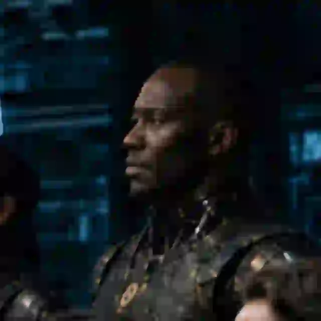

01 2006 · O PONTO DE PARTIDA
A superfície
do impacto.
Um currículo registra cargos. Uma trajetória revela o que cada experiência construiu.
- Universidade de PernambucoEngenharia Mecânica · 2006—2014
Preparando a superfície do impacto
01 2006 · O PONTO DE PARTIDA
02 2006 — 2014
03 2014 — 2017
04 2017 — 2023
05 2023 — HOJE
06 HIC · HIGH-IMPACT INDIVIDUAL CONTRIBUTOR
07 O PANTEÃO DESPERTA
08 IMPACTO MATERIALIZADO
09 PROVA, NÃO PROMESSA
10 MANIFESTO FINAL
Cada fase acrescentou uma camada: método, operação, liderança, negócio, confiança, vendas e tecnologia.
O resultado é uma forma de trabalhar que transforma complexidade em sistemas capazes de continuar operando.
HIC · HIGH-IMPACT INDIVIDUAL CONTRIBUTOR
HIC é o profissional que combina profundidade, autonomia e execução para melhorar o resultado do sistema inteiro — mesmo sem depender do tamanho do time ou da estrutura.
No meu trabalho, isso significa liderar a operação comercial sem me afastar da construção: desenho processos, organizo rotinas, conecto dados e aplico IA para que o time venda melhor, decida mais rápido e opere com menos dependência.
O PANTEÃO
Agentes com função, memória e limites claros — coordenados para ampliar capacidade, não para substituir julgamento humano.
Estratégia e comando
Pesquisa e inteligência
Texto e narrativa

Métricas e vigilância
Tecnologia e construção
Processos e operação
Revisão e risco
Continuidade e cuidado
Campanhas e expressão
PROVA, NÃO PROMESSA
Produtos e operações reais que conectam estratégia, tecnologia, dados e execução.
CRM, BI, contratos, suporte, metas, rituais e automações em um sistema operacional comercial.
GESTÃO COMERCIALReservas, financeiro, conciliação, trilha auditável e monitoramento determinístico.
OPERAÇÃO & CONFIABILIDADEUma tese de saúde pet evoluindo para produto, experiência e ecossistema.
PRODUTO & EXPERIÊNCIAAgentes especializados, memória institucional e execução coordenada.
IA APLICADAMANIFESTO
Engenharia por formação. Head Comercial com foco em processos, inteligência artificial aplicada e execução.